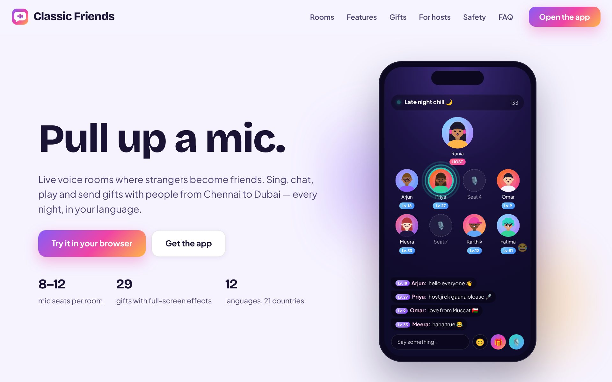

Technical handbook · Version 1.0
Installation
& Hosting
Guide
From a zip file on your laptop to a live app with its own domain and HTTPS — every step, every command, two ways to do it.

From a zip file on your laptop to a live app with its own domain and HTTPS — every step, every command, two ways to do it.

Classic Friends is one Node.js program. Put it on a computer that is always on, give that computer a name on the internet and a padlock (HTTPS), and the app, the admin console and the website are all live.
| Piece | What it is | You get it from |
|---|---|---|
| Domain name | The address people type, e.g. classicfriends.app. We use yourdomain.com for the website and app.yourdomain.com for the app and admin console. | A registrar: Namecheap, GoDaddy, Hostinger, Cloudflare (~$10–15 per year) |
| Server | An always-on computer running the Node.js program. | Path A: Render (managed) · Path B: a VPS from DigitalOcean, Hetzner, AWS Lightsail or Hostinger (~$5–12 per month) |
| HTTPS certificate | The padlock. Browsers only allow microphones on https:// pages, so this is not optional. | Free, automatic (Let's Encrypt via Certbot, or built into Render) |
| Nginx | The doorman on your own server: receives https traffic, hands it to the app, serves the website files. | Installed by the setup script (Path B only) |
| pm2 | Keeps the app running, restarts it after crashes and reboots, keeps logs. | Installed by the setup script (Path B only) |
website/ folder on Netlify or any shared hosting| Typical monthly cost | Amount |
|---|---|
| Domain (yearly, averaged) | $1 |
| Path A — Render starter + disk | $7.25 |
| Path B — VPS 2 GB RAM (Hetzner / DigitalOcean / Lightsail) | $5–12 |
| HTTPS certificate | $0 |
| Uptime monitoring (UptimeRobot free plan) | $0 |
| Later: Agora / LiveKit voice at scale | pay as you go (~$1 per 1,000 listener-minutes) |
Dockerfile and docker-compose.yml; Railway and Fly.io detect the Dockerfile automatically. Set the same three environment variables (ADMIN_TOKEN, BOTS, START_COINS) and attach a persistent volume at /app/server/data.Ten minutes of preparation saves an hour of confusion later.
classic-friends/ (the zip you received), unzipped on your computer.ssh and scp commands we use.yourdomain.com for the website and app.yourdomain.com for the app + admin. Replace them with yours everywhere.npm install and npm start on your computer and open http://localhost:3000. If it works there, it will work on the server — the server runs exactly the same program.| Folder / file | Needed on the server? |
|---|---|
server/ shared/ app/ admin/ website/ package.json | Yes — this is the app |
deploy/ | Yes for Path B — the setup script, Nginx configs, pm2 config, backup and update scripts |
render.yaml Dockerfile docker-compose.yml | Yes for Path A and Docker hosts — they must stay at the top level of the folder |
node_modules/ | No — created on the server by npm install. Do not upload it (it is large) |
docs/ dist/ | Optional — documentation and the single-file demo |
.env | Created on the server with your secrets (Chapter 5). Never put it in a public GitHub repository |
Buy the name, then tell the internet where your server is. DNS changes can take from a few minutes to a few hours to spread.
.com is the safest choice.Leave TTL on "Automatic". "Host" is sometimes called "Name"; @ means the domain itself. Delete any placeholder A or CNAME records for @ and www that the registrar created.
| Path | Type | Host | Value |
|---|---|---|---|
| B — own server | A | @ | your server's IP address, e.g. 203.0.113.10 |
| A | app | the same IP address | |
| CNAME | www | yourdomain.com | |
| A — Render | CNAME | app | the address Render shows, e.g. classic-friends.onrender.com |
| A / CNAME | @ and www | wherever the website lives (Render static site, Netlify, or the same service) |
# On your computer (Windows PowerShell or Mac Terminal) nslookup app.yourdomain.com Name: app.yourdomain.com Address: 203.0.113.10 ← must show YOUR server's IP
Or check on dnschecker.org. Do not run the HTTPS step of the setup until this shows your IP.
Render runs the Node program for you, gives it HTTPS and restarts it when needed. You push code to GitHub; Render deploys it. About 30 minutes.
classic-friends, choose Private, and create it.classic-friends folder in (everything except node_modules), and click Commit changes. With many files this can take a few minutes. Alternatively install GitHub Desktop, choose Add local repository, and publish.package.json, render.yaml, server/ and app/ at the top level.classic-friends repository. Render reads render.yaml and shows one web service. (If you prefer the manual way: New → Web Service, build command npm install, start command npm start.)server/data so member accounts survive restarts. The Free plan is fine for a test, but it sleeps after 15 minutes of inactivity and has no disk.BOTS=10, START_COINS=200 and generates a random ADMIN_TOKEN. Open the service → Environment to read or change them.https://classic-friends-xxxx.onrender.com). The app loads with HTTPS already working. Sign in, open a room, take a mic — your phone will ask for microphone permission.app.yourdomain.com.website, custom domain yourdomain.com (and www).website/index.html uncomment the line window.CF_APP_URL = "https://app.yourdomain.com", commit, and Render redeploys.Upload or push changed files to GitHub. Render rebuilds and restarts automatically (watch Logs). To roll back, open Events and click Rollback on a previous deploy.
A small virtual server you fully control. One script installs Node, pm2, Nginx, the firewall and the HTTPS certificate. About 45 minutes, most of it waiting.
203.0.113.10) and add the DNS records from Chapter 3 now, so they propagate while you work.# Windows PowerShell or Mac Terminal — type yes when asked about the fingerprint ssh root@203.0.113.10 root@classic-friends:~# ← you are now typing on the server
Pick whichever you find easiest. The folder must end up at /opt/classic-friends on the server.
# On YOUR computer, from the folder that contains classic-friends/ (not inside it) # First delete classic-friends/node_modules if it exists — it will be rebuilt on the server scp -r classic-friends root@203.0.113.10:/opt/classic-friends
Install FileZilla, choose protocol SFTP, host = your IP, user root, your password or key. Drag the classic-friends folder (without node_modules) into /opt/.
# On the server (private repos will ask for a GitHub token as the password)
apt-get update -y && apt-get install -y git
git clone https://github.com/YOUR-USER/classic-friends.git /opt/classic-friends
# On the server. Arguments: app domain · website domain · your email (for the certificate). Takes 5–10 minutes.
bash /opt/classic-friends/deploy/setup-ubuntu.sh app.yourdomain.com yourdomain.com you@email.com
The script prints seven numbered steps. This is what each one does:
| Step | What happens |
|---|---|
| 1 System packages | Updates Ubuntu and installs curl, git, nginx, unzip and the ufw firewall. |
| 2 Node.js 20 + pm2 | Installs the Node runtime and the pm2 process manager. |
| 3 App folder | Runs npm install inside /opt/classic-friends and creates server/data and backups. |
| 4 Environment | Creates /opt/classic-friends/.env with PORT=3000, a random ADMIN_TOKEN (printed on screen — save it), BOTS=10, START_COINS=200. |
| 5 pm2 | Starts the app, saves the process list and registers pm2 to start at boot. |
| 6 Nginx | Installs two site configs: app.yourdomain.com → the Node app (with WebSocket support) and yourdomain.com → the website/ folder. |
| 7 Firewall + HTTPS | Opens ports 22, 80 and 443 only, then asks Let's Encrypt for certificates and switches both domains to HTTPS with automatic renewal. |
All done 🎉
App → https://app.yourdomain.com
Admin → https://app.yourdomain.com/admin/ token: kQ9v2…
Website → https://yourdomain.com
Logs → pm2 logs classic-friends
nslookup app.yourdomain.com shows your IP, then run certbot --nginx -d app.yourdomain.com -d yourdomain.com -d www.yourdomain.com. Everything else is already in place.https://app.yourdomain.com/healthz — you should see {"ok":true,…}.https://app.yourdomain.com on your phone, sign in, join a room and take a mic. Allow the microphone. Open the same room on a second phone or laptop and talk — you should hear each other.https://app.yourdomain.com/admin/ and sign in with the token from .env.https://yourdomain.com — the website — and press Open the app.reboot, wait a minute, open the app again. pm2 brings it back by itself.The app is up — now the website, then fifteen minutes of settings before you tell anyone.
The site is plain files in website/: host it on the same server (Path B did this) or on any static host.
| Where | How |
|---|---|
| Same server (Path B) | Done by the setup script: Nginx serves /opt/classic-friends/website at yourdomain.com. To update, upload the new website/ folder — no restart needed. |
| Render static site | New → Static Site → same repository → publish directory website → custom domain yourdomain.com. |
| Netlify / Vercel | Drag the website folder onto app.netlify.com/drop — live in seconds with HTTPS. Add your domain in Site settings. |
| Shared hosting (Hostinger, cPanel) | Upload the contents of website/ into public_html with the file manager. |
window.CF_APP_URL line near the top of website/index.html and set it to https://app.yourdomain.com./opt/classic-friends/.env · Render: the Environment tab.BOTS=10 keeps a few rooms alive while the community is small; set BOTS=0 once real hosts are around every evening. Edit .env, then pm2 restart classic-friends --update-env (Render: edit the variable).START_COINS=200 is a sensible gift to new members. Raise it for a launch campaign.website/privacy.html and website/terms.html (company name, address, date).supportEmail and website in shared/catalog.js → BRAND to your real addresses, then restart.https://app.yourdomain.com/healthz — you get an email if the app goes down.Path B housekeeping — Render does most of this for you. The hardening list at the end takes ten minutes.
pm2 status # is it running? memory? restarts? pm2 logs classic-friends # live log (Ctrl+C to leave) pm2 restart classic-friends --update-env # after changing .env pm2 stop classic-friends # stop (members see "connection lost") pm2 start /opt/classic-friends/deploy/ecosystem.config.js && pm2 save
git pull). Do not delete server/data or .env.bash /opt/classic-friends/deploy/update.sh — it installs any new dependencies, takes a backup and restarts the app. Members reconnect automatically within a few seconds.Member accounts are in server/data/users.json. The script deploy/backup.sh copies it with a timestamp into backups/ and keeps the last 30 copies. Run it daily:
crontab -e
# add this line, save, exit
0 3 * * * /opt/classic-friends/deploy/backup.sh
Once a week copy the newest backup to your computer (scp root@203.0.113.10:/opt/classic-friends/backups/users-*.json .) or turn on your provider's snapshots.
apt-get update && apt-get upgrade -y # monthly; reboot if it says so certbot renew --dry-run # certificates renew themselves; this checks the timer df -h / # disk space (rotate logs: pm2 install pm2-logrotate)
ssh-keygen on your computer, add the public key to the server's ~/.ssh/authorized_keys, then set PasswordAuthentication no in /etc/ssh/sshd_config and systemctl restart ssh.apt-get install -y fail2ban — the defaults protect SSH.apt-get install -y unattended-upgrades..env, restart) and never use the development default classicfriends-admin on the internet.None of these are needed on day one. Each one is a contained change; docs/ARCHITECTURE.md shows exactly where it plugs in.
| When | Add | How |
|---|---|---|
| First real money | Payments (Razorpay for India, Stripe / Tap / Telr for the Gulf) | Create a checkout for each coin pack. The gateway's webhook calls your server, which calls engine.recharge(userId, { packId }). Remove recharge from the client ACTIONS list in server/index.js so coins can only come from verified payments. |
| Before 1,000 members | Real sign-in (phone OTP via MSG91 / Twilio Verify, or Google via Firebase Auth) | After the provider confirms the user, the server calls engine.login({ id: providerUserId, name, … }). Never accept an id from the client. |
| Before 1,000 members | Database (PostgreSQL on Supabase / Neon / RDS, or MongoDB Atlas) | Persist users, rooms, DMs, moments, families and reports instead of the JSON snapshot. The engine's maps are the seams. Keep daily automated backups on the database provider. |
| Rooms with 8+ speakers or 30+ listeners | Agora or LiveKit for voice | Replace app/js/voice/webrtc.js with the SDK: join channel = room id, publish the mic when seated. Also add a TURN server (coturn or Twilio) so strict mobile networks connect. |
| Traffic grows | Several servers behind a load balancer | Add the Socket.IO Redis adapter so room events reach every instance; put the database behind them. |
| Launch marketing | App stores | The app is already installable (PWA). For a store listing wrap it with Capacitor (iOS + Android) or a Trusted Web Activity (Android). Push notifications via Firebase Cloud Messaging. |
| Any time | Analytics | Add Plausible or Google Analytics to app/index.html and website/index.html; the admin dashboard already shows the product numbers. |
docs/ARCHITECTURE.md and this chapter. Each item is a few days of work for a Node.js developer; none of them require rebuilding the app.Nearly every hosting problem is one of these.
| Symptom | Cause → fix |
|---|---|
| Browser shows "Welcome to nginx!" | The site config is not enabled. ls /etc/nginx/sites-enabled should list classic-friends-app; run the setup script again or ln -s the config, then nginx -t && systemctl reload nginx. |
| 502 Bad Gateway | Nginx is fine but the app is not running. pm2 status → if stopped, pm2 logs classic-friends shows why (usually a missing npm install or a bad .env line). |
| App loads but says "Server not reachable" / demo mode notice | WebSocket is blocked. Check the Nginx config has the Upgrade headers (it does in deploy/nginx-app.conf); on Cloudflare enable WebSockets. |
| Microphone does not work on phones | The page is not https://, or the certificate failed. Fix DNS, then run certbot (section 5.4). Also check the phone did not block the mic for the site. |
| Certbot: "DNS problem" / "connection refused" | DNS not propagated, or port 80 closed. Wait for nslookup to show your IP; ufw status must show Nginx Full allowed. |
| "EADDRINUSE: port 3000" | Something else is on port 3000 (often a second copy of the app). pm2 delete all then start again from the ecosystem file. |
Node version error on npm install | Ubuntu's own Node is too old. The setup script installs Node 20; run it again or node -v must show 18 or higher. |
| App stops after a reboot | pm2 startup was not registered: pm2 startup, run the command it prints, then pm2 save. |
| Members lost coins after a restart | server/data/users.json was deleted or not writable; on Render the disk was not attached. Restore from backups/. |
| Out of memory / slow | 1 GB RAM with bots on. Set BOTS=0, add 1 GB of swap (fallocate -l 1G /swapfile && chmod 600 /swapfile && mkswap /swapfile && swapon /swapfile), or resize the server. |
| Render app is slow to open | Free plan sleeping. Upgrade to Starter, or accept the ~30 s wake-up for testing. |
| Website shows but "Open the app" goes nowhere | Set window.CF_APP_URL in website/index.html (section 6.1). |
Everything from this guide on one page — replace the domain, IP and paths with yours. Companion documents: User Guide · Admin Console Guide · docs/DEPLOYMENT.md.
scp -r classic-friends root@203.0.113.10:/opt/classic-friends # from your computer ssh root@203.0.113.10 cd /opt/classic-friends # on the server bash deploy/setup-ubuntu.sh app.yourdomain.com yourdomain.com you@email.com
pm2 status · pm2 logs classic-friends · pm2 restart classic-friends --update-env nano /opt/classic-friends/.env # ADMIN_TOKEN · BOTS · START_COINS · PORT bash /opt/classic-friends/deploy/update.sh # after uploading a new version bash /opt/classic-friends/deploy/backup.sh # manual backup (cron runs it at 03:00) curl https://app.yourdomain.com/healthz # {"ok":true,...}
nginx -t && systemctl reload nginx certbot --nginx -d app.yourdomain.com -d yourdomain.com -d www.yourdomain.com certbot renew --dry-run
| File | What it is |
|---|---|
/opt/classic-friends/.env | Secrets and settings |
/opt/classic-friends/server/data/users.json | Member accounts — back it up |
/opt/classic-friends/backups/ | Timestamped copies (last 30) |
/etc/nginx/sites-enabled/classic-friends-* | Web server configs |
/opt/classic-friends/deploy/ | setup-ubuntu.sh · update.sh · backup.sh · ecosystem.config.js · Nginx configs · Caddyfile |
render.yaml · Dockerfile · docker-compose.yml | Project root — for Render and Docker hosts |
| Variable | Default | Meaning |
|---|---|---|
PORT | 3000 | Port the app listens on (Nginx talks to it) |
ADMIN_TOKEN | random (script) / classicfriends-admin (dev) | Admin console password |
BOTS | 10 (script) / 70 (dev) | Simulated people; 0 for a real community |
START_COINS | 200 (script) / 1000 (dev) | Welcome coins per new account |